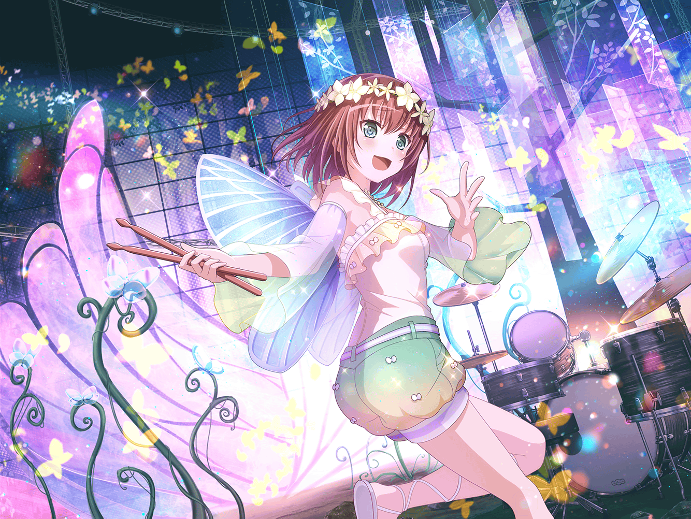

江戸川楽器店
麻弥
んー、このカーボンのメタルシェルは
シャープな音がたまらないッス～！
麻弥
あっ！ こちらはビンテージなスネアじゃないッスか！
フヘヘ……今日はラッキーだなぁ
麻弥
あっ、{{userName}}さん。楽器を見に来られたんですか？
……なるほど。スタジオに置く機材を探しているんですね
麻弥
ジブンは新しいドラムの偵察です！
前々から気になってるモデルがあったんですよ
麻弥
機材をみているだけでテンション上がっちゃいますね！
新製品が発売すると、つい楽器屋に来ちゃうんですよ
麻弥
研究熱心、ですか？
いえ、好きなだけですよ！
麻弥
機材のことだったらなんでも聞いてくださいね！
少しはお役に立てると思います
麻弥
……ふむふむ、スタジオ用のピックが不足しているんですね。
確かこっちにピックコーナーがあったはずですよ
麻弥
やっぱり、ここにあるッス！
……あ、このピック、犬の柄で千聖さんが好きそうですね
麻弥
千聖さんのこと、詳しいですか？
いえ、実は最近犬を飼っていることを教えてもらいました
麻弥
そうだ……あの、できたらでいいんですけど、
{{userName}}さんに話したいことがあるんです
麻弥
楽器見ながらでいいので、少し聞いてもらえますか？
麻弥
……本当ですか！ ありがとうございます
麻弥
この間、千聖さんが出演する舞台の稽古があって、
パスパレのみんなで見学に行ったんですよ
麻弥
ジブン、演劇部なので見学というだけですごく楽しみで！
……あ、演劇部って言っても裏方ですけどね
麻弥
けど、プロの裏側や大道具はどうなってるんだろうなって、
ずっと気になっていました
麻弥
現場をいざ見てみると……すごい作り込みでした！
それに、演技の練習の方も想像以上でした！
麻弥
全員プロですからね。
練習なのに本番のような緊張感がありました
麻弥
すぐに目が離せなくなって……
その中には、もちろん千聖さんの姿もありました
麻弥
いつもの千聖さんとは違って、
真剣に役に入り込んでいるようでした
麻弥
けど、その舞台の監督の方は、
千聖さんの役は『つもり』になっているだけだと言ったんです
麻弥
ジブンは素人だからかもしれませんが、
千聖さんが真剣に役を演じているように見えました
麻弥
それに、千聖さんは努力をすることは当然と言っていたので、
きっと舞台が決まってから、ずっと練習をしていたと思います
麻弥
だからこそ、監督の方に『つもり』なんて言われている理由が
ジブンには分からなかったです
麻弥
それでも、ジブンや彩さんたちは、
どこかで千聖さんならできるはずと思い込んでいました
麻弥
今思うと、千聖さんならという勝手なイメージを
押し付けていたのかもしれないです
麻弥
けど、それが分かっていなかったので、
練習の休憩中にみんなでエールをおくりました。
けど、それは逆効果だったみたいで……
麻弥
千聖さんを怒らせてしまったんです。
帰ってとまで言われてしまいました
麻弥
今思うと、千聖さんはなかなか思うようにいってなかったんですよ
麻弥
ジブンも同じ立場なら、
どうしていいか分からなくなってしまうと思います
麻弥
そんな心境なのに、応援をされたら戸惑ってしまいますよね
麻弥
千聖さんは、そういう仕事の悩みっていうんですかね。
それをジブンたちには一度も相談したことはなかったんです
麻弥
それなのに、ジブンは千聖さんに
何度も相談したり、頼ってしまったことがありました
麻弥
きっと、彩さんたちも千聖さんに
頼ってしまうことが多かったと思います
麻弥
いつも誰かの相談に乗ったり、頼られて、
それに演劇の仕事もあって、本当はいっぱいいっぱい
だったのかなと思います
麻弥
千聖さんもジブンと同じ高校生の女の子ですからね。
いつの間にか、それを忘れてしまっていました
麻弥
そんなことにすら、気付くことができなくて……
とても情けないです
麻弥
そんなにジブンを責めなくても、ですか。
あはは、そうですかね。でも、ジブン……悔しかったんです
麻弥
同じバンドなのに、千聖さんのこと全然知りませんでした
麻弥
それから、もっと千聖さんのことを知りたいと思った時に、
千聖さんからパスパレメンバーでお茶に行こうと誘われたんです
麻弥
舞台練習の時、怒ってしまったお詫びという理由でした。
ジブンは誘ってもらえてすごく嬉しかったです！
麻弥
喫茶店では、千聖さんが自分のことをたくさん教えてくれました。
妹がいること、犬を飼っていること
麻弥
それに、お茶をしている千聖さんがいつもとは少し違って、
なんて言えばいいんだろう……すごく自然に思えたんです
麻弥
だからこそ、ジブンはすごく嬉しかったです！
麻弥
お茶会の後から、パスパレでの千聖さんの様子も
前よりもっと話しやすくなった気がします
麻弥
ジブンは今の千聖さんの方が良いと思っています。
もちろん、前の千聖さんも素敵ですよ！
麻弥
それに、千聖さんは仕事にも真剣に向き合っていたので、
そういうプロフェッショナルな部分も
見習わなきゃなと思いました！
麻弥
ジブンは、今は演奏しかないと思うので、
いつか誰に見せても恥ずかしくない演奏を
目指したいと改めて思いました
麻弥
それだけじゃなくて、他の部分でもジブンにできることが
あるんじゃないかとも思ったんです
麻弥
先ほど、パスパレのメンバーの中では、
千聖さんに頼ること多いってお話しましたよね
麻弥
だからこそ、ジブンが千聖さんに頼って
もらえるようになりたいって今は思っています！
麻弥
そのために、まずは千聖さんのことをもっと知るべきですよね。
ふふふ、情報収集は得意なので、がんばりますよ！
麻弥
あ、すみません。ジブン話すと止まらなくなってしまって
麻弥
これからはきっと、パスパレのチームワークを
今まで以上に良くしていきたいと思っています！
麻弥
なので、{{userName}}さん。
今後もサポートよろしくお願いしますね